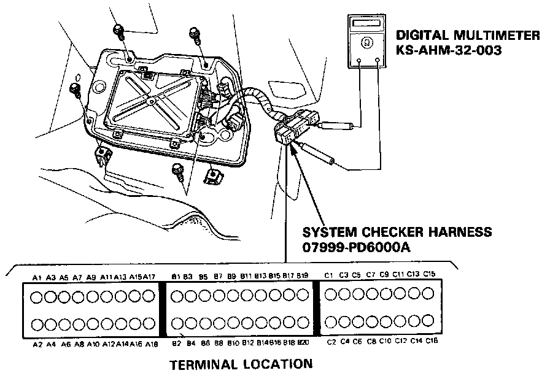
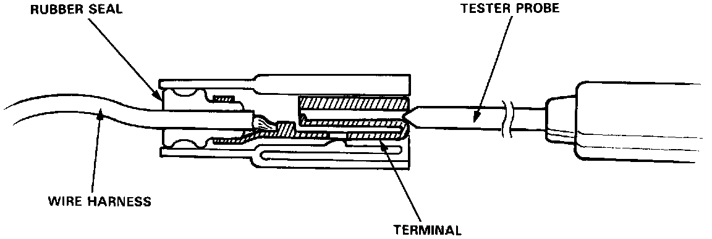

Pinout Values and Diagnostic Parameters

Test Harness Installation
If the inspection for a particular failure code requires the system checker harness, remove the right door sill molding, the small cover on the right kick panel, and pull the carpet back to expose the ECU. Unbolt the ECU bracket and disconnect the 7P connector from the Cooling Fan Timer Unit near the upper left corner of the ECU bracket. Connect the system checker harness. Then check the system according to the procedure described for the appropriate code(s).

Electrical Troubleshooting
CAUTION:
Puncturing the insulation on a wire can cause poor or intermittent electrical connections.
For testing at connectors other than the system checker harness, bring the tester probe into contact with the terminal from the connector side of wire harness connectors in the engine compartment. For female connectors. just touch lightly with the tester probe and do not insert the probe.